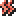
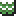

Regalos, Cumpleaños y Festivales Estacionales
| 👤 Personaje | 🎂 Cumpleaños | ❤️ Favorito | 👍 Le Gusta |
|---|---|---|---|
| Mist | Otoño 1 | Flor de Emery |
Rábano
Manzana horneada
Trébol de 4 hojas
Udon frito
Pastel
Croquetas
Mariscos gratinados
Pan al vapor
Pan de queso
Panqueque
|
| Rosetta | Verano 21 | Papa horneada |
Maíz asado
Omelet
Maíz
Cebolla
|
| Lara | Invierno 1 | Pastel de chocolate |
Hotcakes
Fresa
Calabaza
|
| Melody | Primavera 11 | Té relajante |
Hierbas silvestres
Trigo
|
| Sharron | Invierno 11 | Hojas de té relajante |
Cristales mágicos
Brote de bambú
|
| Tori | Primavera 17 | Flan de calabaza |
Uva
Flor Pink Cat
Calabaza
|
| Felicity | Otoño 6 | Cuajada de berenjena |
Pan tostado
Pizza
Berenjena
Calabaza
|
| Mei | Invierno 26 | Bolitas de arroz horneadas |
Pescado fresco
Camote
|
| Lynette | Invierno 28 | Trébol de 4 hojas |
Yogur grande
Fresa
Brote de bambú
|
| Tabatha | Verano 12 | Gachas de arroz |
Uva
Harina
|
| Bianca | Verano 8 | No acepta regalos |
—
|
🌱 Qué Sembrar por Temporada
Información de Cultivos
🌸 Primavera
Cultivos recomendados (Le gusta o para recetas):
-
Uva — Le gusta a Tori, Tabatha
-
Brote de bambú — Le gusta a Lynette, Sharron
Uva es útil para regalos y recetas, y brote de bambú es un cultivo especial.
☀️ Verano
Cultivos recomendados (gustados o para recetas):
-
Maíz — Le gusta a Mist, Rosetta
(Ingrediente de Maiz Asado y Omelet) -
Tomate — Le gusta a Mist
-
Cebolla — Le gusta a Rosetta
-
Uva — Le gusta a Tori, Tabatha
-
Calabaza — Le gusta a Lara, Felicity, Tori
Maíz, tomate y calabaza son cultivos versátiles para regalos y cocina.
🍂 Otoño
Cultivos recomendados (gustados o para recetas):
-
Calabaza — Le gusta a Lara, Felicity, Tori
-
Berenjena — Le gusta a Felicity
-
Camote — Gustado por Mei
Calabaza y berenjena son cultivos importantes para regalos y cocina.
❄️ Invierno
Cultivos recomendados (gustados o para recetas):
-
Brote de bambú — Le gusta a Lynette, Sharron
-
Pescado fresco (pesca) — Le gusta a Mei
En invierno la pesca es clave y brote de bambú sigue disponible.
💀 Estados Alterados y Cómo Curarlos
Información de Estados Alterados
Veneno
Efecto: Pierdes HP gradualmente.
Cura: Antídoto, Hierba Curativa, Health It, Invincibot.
 Parálisis
Efecto: Solo puedes caminar.
Cura: Paragon, Health It, Invincibot.
Sellado
Efecto: No puedes usar magia ni mejorar herramientas.
Cura: Roundoff, Health It, Invincibot.
 Resfriado
Efecto: Duplica el consumo de RP si te duermes tarde.
Cura: Dormir antes de la 1:00 AM o Medicina para el Resfriado.
Enfermedad
Efecto: Triplica el consumo de RP al día siguiente.
Cura: Dormir temprano o usar Medicina para el Resfriado.